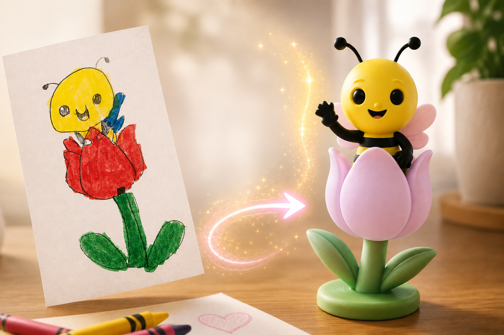
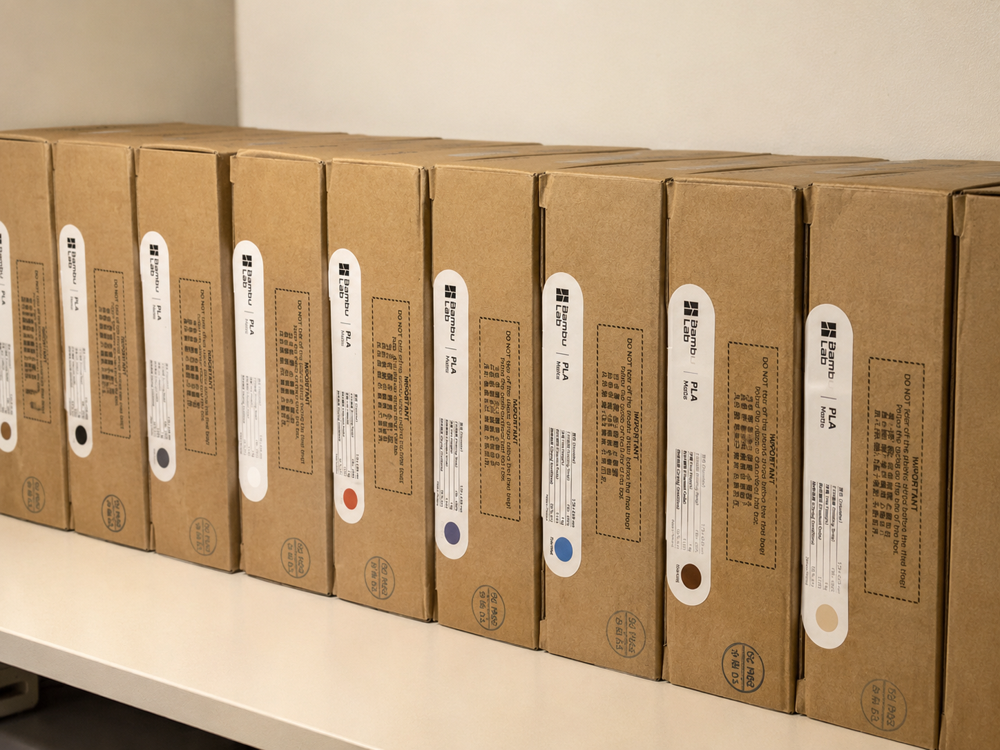

About OliPoly
Small studio. Real reasons to make.
OliPoly began with curiosity, family, and the belief that useful or meaningful ideas deserve a physical form.

Why it exists
Design should feel personal—even when the part is practical.
From a child’s drawing to a production bracket, the work starts by understanding why the object needs to exist. The printer is a tool. The reason is the point.
Inside the studio
Where ideas become dependable objects.
A focused workspace in Aurora, Ohio, equipped for careful prototypes, custom work, and repeat small-batch production.


The next object
Bring us the beginning.
A photo, sketch, broken part, or rough idea is enough.
Start a project